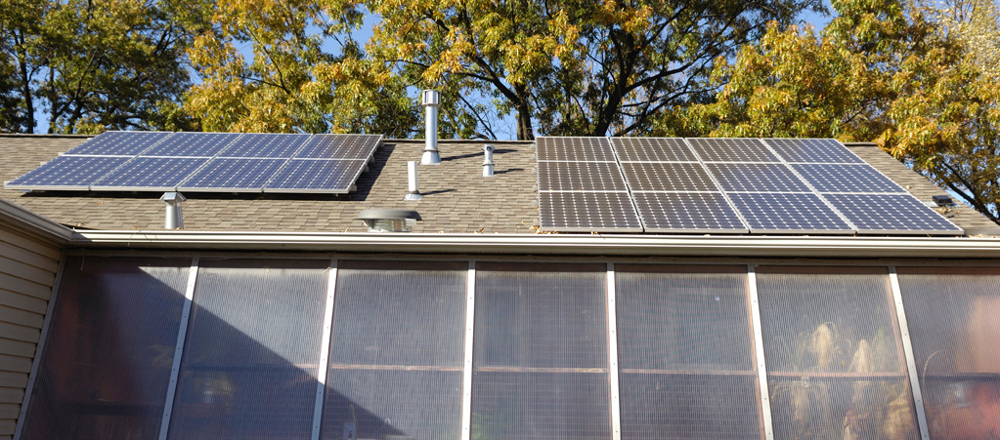
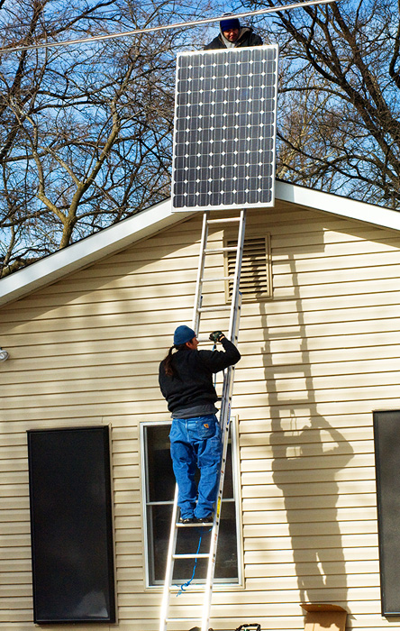
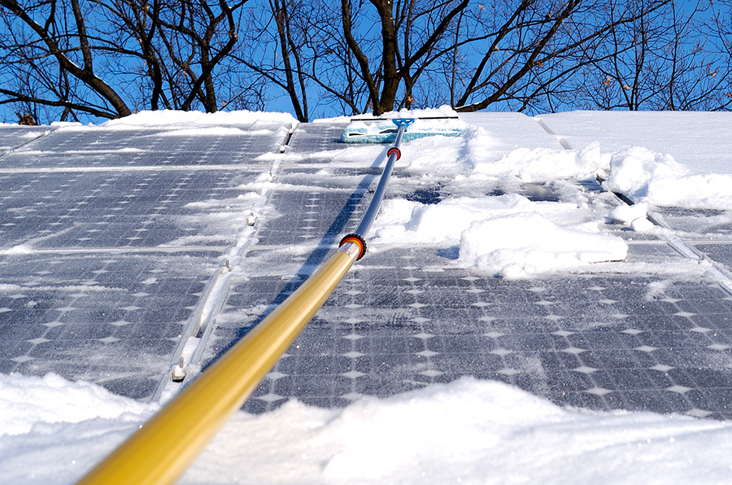
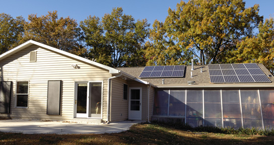

As of March 27th our photovoltaic system has generated 406 kWh of useable electricity. Considering how few days of sunshine we have had in St. Louis, this certainly meets our expectations. Of course it would have been great to have had more days with full sun. On days with full sun, the system generated 15 kWh or more of AC power, on February 24, 15 KWh, on March 23, 15.7 kWh, and on March 26, 16.6 kWh. On those days, the panels were generating at about 90% of their rated capacity during the noon hour. According to the California grosolarcalifornia.org website, this is more than 95% of the PTC rating, which is closer to what can be expected under realistic conditions. (Note that this system consists of twelve 230 watt panels, which have a PTC rating of 209 watts each.)
As of May 31, 2010 our system continues to meet more than 50% of our electric needs and has generated more than 1,162 kWh of useable electricity. In fact, from early April through early May of 2010 the system generated 55 kWh more than we used. The fact that we were out of town for a week was a factor. Up to this point, we have had several days with an output of 16.7 kWh. For the most part, on days with full sun or nearly full sun the system has been generating 15 kWh or more. In May, there were 14 days where more than 14 kWh were generated and 11 days where less than 10 kWh were generated. If it were not for some shading in the early morning before 7:00 am and after 6:30 pm CDT, we would probably be getting 0.2 to 0.4 kWh more on sunny days. For the Month of May, the system will have generated about 352 kWh of electric power.
As of September 18, 2010 our system had generated a total of 2.5 Megawatt hours (2,500 kWh) of electricity. Thus, in 7 1/2 months the solar panels have provided nearly 60% of our electricity. During the month of August the 402 kWh of electricity was generated and we used an additional 311 kWh from the grid. Even with more hours of sunlight during June, July and August a maximum of only 15.5 kWh of electricity was generated in any single day. This compares to a maximum of 16.7 kWh on several days in March and April. Apparently the summer heat with the high temperatures in the attic and roof under the panels significantly reduced their output. At this time, we are considering the possibility of adding another 2 kW in order for us to come close to generating 100% of our electric usage.
On November 3, 2010 the system had generated 3.0 Megawatt (3,000 kWh) hours of AC power. Thus in the nine months since our panels were installed, the system has averaged 333 kWh per month. We are anticipating a total of around 3,600 kWh for the first year of operation. The month of October was especially sunny for this time of year in St. Louis. As a result, 340 kWh of electricity was generated. It is interesting to note that, that there has been more loss due to shading in the early morning and late afternoon than there had been in the spring. With leafs still on the trees, the panels have not been receiving full sun until around 8:45 am CDT. Then after 4:30 pm or so, the panels again begin to lose full sun. As a result, I estimate that we are losing as much as 1 kWh on days with full sun.
On December 1, 2010 the installation of an additional 1.92 kW of generating capacity was completed. With a total of 4.68 kW, we hope to have a system that will generate enough electricity to match most of our electrical usage. The eight additional panels consist of 240 watt Sharp panels, which are manufactured in the United States. For inverters, we chose the so called micro-inverters from Enphase. Each panel has its own inverter with the AC output of each inverter combined and sent to our main circuit breaker panel through an outside cutoff switch. With the micro-inverters there is no need to send DC current to a central inverter. Thus only AC lines run from the inverters into our house.Due to an incorrect AC cable, one designed for three phase connections, the original installation did not work correctly. After a replacement cable arrived, the people from Straightup Solar quickly completed the installation. Because Enphase apparently has been having trouble keeping up with a large number of orders, it took about two weeks to get the replacement cable. In the short time that the additional panels and inverters have been in place, it appears that they are generating somewhat more than expected in comparison to the original system. In particular, they actually produce as much power as the original system under cloudy conditions. As we have more experience, will provide a more detailed update.
January 2011 snow in St. Louis has been a problem for the system. On one occassion, I actually climbed onto the roof after a light snow to clean off the panels. But with heavier snow this seems to be rather dangerous. So I purchased a cloth window washing brush and a 23 foot pole that I am now using to remove the snow. I still have to climb on a ladder, but I do not actually have to get on the roof. To me, this is a lot safer. The brush has worked pretty well except with our most recent ice storm. With the ice and sleet on the panels, I don't see any other option but to wait for the ice to melt. As of February 3, 2011 the original 2.76 kW system has generated 3455 kWh of electricity. This is about 110 kWh short of the PVWATTS estimate from the U.S. government at rredc.nrel.gov/solar/calculators/PVWATTS/version1 . Considering that there has been snow on the panels for quite a few days during January, this software estimate is suprisingly close. With the additional Sharp panels and Enphase micro-inverters, the total energy is 3685 kWh. According to the DC rating of the Sharp panels, they should generate about 70% of what the orginal Candian Solar panels produce. Instead their actual output has been about 76%. This is most likely due to a combination of factors. First the effect of shading and mismatching between panels is less of a problem with separate inverters, and the Sharp panels appear to be a bit more efficient under low light (cloudy) conditions. As of May 17, 2011 the original 2.76 kW system has generated 4,324 kWh of electricity, and the newer 1.92 kW system has generated 925 kWh of electricity. On May 16, together the two systems generated 30.3 kWh of electricity, 17.3 kWh for the larger system and 13 kWh for the smaller system. This is a record high for us. The day was sunny with just a few minutes where clouds partially blocked the sun and was an unusually cool day for this time of year in St. Louis. In the 5.5 months that both sytems have been up and running, they have generated slighty more electricity than we have used. In December and January with few sunny days, we used more than was generated, but this deficit was compensated by the power generated during February, March and April. In April, the system put a net surplus of more than 200 kWh back into the grid.As of February 1, 2012 the original 2.76 kW system has generated 6,766 kWh, which is almost 100 kWh less than last year. The second 1.92 system has generated 2,802 kWh since it was installed in December of 2011. Because of our effort to make our home as energy efficient as possible, our PV system has generated an excess of 1,156 kWh this past year. In addition, all of the electricity we used each month was covered, thanks to our efficient HVAC system and lots of insulation. Even our solar heating helps us save electricity since the blower on the HVAC does not run as much.
As of March, 2012 the original 2.76 kW system has generated just over 7 mWh or 7,000 kWh and the smaller 1.92 sytem has generated just over 3 mWh. We continue to use less than the system generates. The excess might be perfect to use with an electric car or plug in hybrid.
As of October 22, 2013 the original 2.76 kW system has generated just over 13 mWh or 13,000 kWh and the smaller 1.92 sytem has generated just over 7.6 mWh. We continue to use less than the system generates. Since the initial installation in February 2010 and the additional panels in December of 2010, we have used 2 mWh less that the system has generated.
As of March 15, 2014 the original 2.76 kW system has generated just over 14 mWh or 14,000 kWh and the smaller 1.92 sytem has generated about 8.5 mWh. We continue to use less than the system generates. Since the initial installation in February 2010 and the additional panels in December of 2010, we have used 2.5 mWh less that the system has generated.
Both our installer, Straightup Solar, and our local electric utility, AmerenMO, have been very good to work with. Ameren was very prompt in sending out a rebate checks for both installations, and installed a new digital meter a few weeks after the first installation was completed. They did charge for the new meter, but we were advised of this by our installer before starting the project. In February of 2011, AmerenMO bought SRECs from us for a period of ten years. With this additional payment, the earlier rebate, and the federal tax credit, the net cost for our system was about 1/3 of the full price. If you would like additional information, please send me an email, and I will be happy to answer any questions that I can.
Lasted Updated at 12:17 pm CDST on March 23, 2014
|  | ||||||||
|
On December 1, 2010 the installation of 8 additional panels rated at 1.92 kW was completed. With these additional panels, we expect to cover 100 percent of our electrical needs. See more details below. |
||||||||
|  | ||||||||
|  | ||||||||
|  | ||||||||